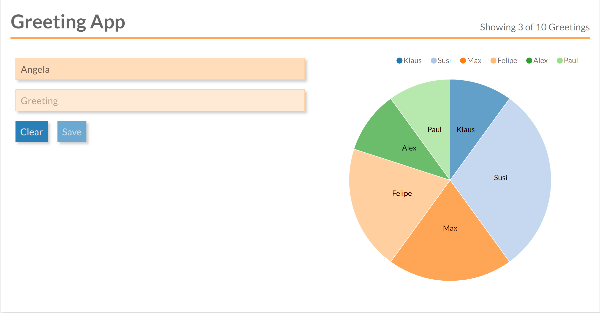

SPA Architecture
Slides: TODO
Single-Page Applications
Components with Templates
A SPA is composed of (business) components:
- Templates describe the UI of the component
- But now:
- Logic is part of the component
- Logic is a "first-class" citizen and no longer a "loose" snippet (like in jQuery)
- Logic is fully executed on the client
- Prominent Frameworks: React, Angular, Vue, and Web Components (Polymer)
Composing an Application from Components
Smart and Dumb Components*
*also known as Mediator Pattern with Web Components / Polymer
Smart Components
- Managing (part of) the application state
- Contain UI logic
- Pass parts of the state as immutable data to subcomponents
- Pass callbacks to subcomponents for interaction
- Mostly domain-specific, not intended to be reusable
Aka Container
Dumb Components
- only for presentation, no logic
- but might contain own ("transient") state
- have no knowledge or dependencies to their surrounding components
- children of Dumb Components are usually other Dumb Components (but there are exceptions)
- reusable
Aka Presentational Component or just Component

Smart Component
@Component({
template: `<sub [greeting]={{greeting}} (onSend)="sent($event)">`
})
export class AppComponent {
// component state
private greeting: string = 'Hiho';
// dependency injection
constructor(private greetingService: GreetingService) {
}
// "Business Logic" delegated to service
sent(greeting) {
this.greeting = this.greetingService.greetBack(greeting);
}
}
Dumb Component
@Component({
selector: 'sub',
template: `
{{greeting}}, World
`,
})
export class SubComponent {
@Input() greeting: string;
// rxjs observer
@Output() onSend = new EventEmitter();
// no business logic, just event emitting
send() {
this.onSend.emit(this.greeting);
}
}
Example
What would be candidates for Smart-/Dumb-Components?
Dumb

Smart

Smart and Dumb Components
Limitations
Mainly with growing and long-living applications
- "God-like" components: State and logic tend to slowly move up to a few really fat components
- Distributed, mutatable state makes maintainability and understanding hard
- Where does the state belong to?
- In which state is the application?
- Mash up of framework and UI code (hardens switching the framework)
- Still open questions regarding the architecture
- How to handle asynchronous code?
- How to do proper initialization of the application?
- How to test the business logic?
Redux
- Central state management: one store for whole app, like a database
- External state management: extract logic from the (UI-)components
Redux
Architectural guidance
- Uni-directional data flow
- Central and immutable state: store
- Only reducers are allowed to modify state
- State moves from Smart Components to store
- UI logic moves from Smart Components in Action-Creators / Services and Reducer
- Asynchronous code only in Action-Creators / Services or Effects
- Initializing of the app with central action
Redux is independent of UI framework
Bindings exist for popular UI frameworks
- React: http://redux.js.org/docs/basics/UsageWithReact.html
- Angular: https://github.com/ngrx/platform
- Vue: https://github.com/vuejs/vuex
- Web Components (Polymer): Redux is recommended implementation of Global Mediator Pattern, https://twitter.com/DJCordhose/status/899943415353311232 https://tur-nr.github.io/polymer-redux/
Redux extracts responsibility out of Components

Redux Pattern, Resulting Architecture

Different Types of State

Reducer
export function counterReducer(state: number = 0, action: Action) {
switch (action.type) {
case INCREMENT:
return state + 1;
case DECREMENT:
return state - 1;
case RESET:
return 0;
default:
return state;
}
}
import { NgModule } from '@angular/core';
import { StoreModule } from '@ngrx/store';
import { counterReducer } from './counter';
@NgModule({
imports: [StoreModule.forRoot({ count: counterReducer })],
})
export class AppModule {}
Connection to Store
interface AppState {
count: number;
}
@Component({
template: `Current Count: {{ count$ | async }}`
})
export class CounterComponent {
count$: Observable<number>;
constructor(private store: Store<AppState>) {
this.count$ = store.pipe(select('count'));
}
reset() {
this.store.dispatch({ type: RESET });
}
}
Is anyone really using this?
 Microsoft Outlook, Twitter, Apple, XING and many others use React and Redux
Microsoft Outlook, Twitter, Apple, XING and many others use React and Redux
Wrap Up Redux
A UI pattern for User Interfaces
- Mainstream solution
- Independent of framework
- Easy testing of business logic as logic is implemented only in pure functions ("Reducer")
- Great debugging because of dev tools
- Works great in large applications with many dependencies between parts / components
- provides architectural guidance where which part of the application goes